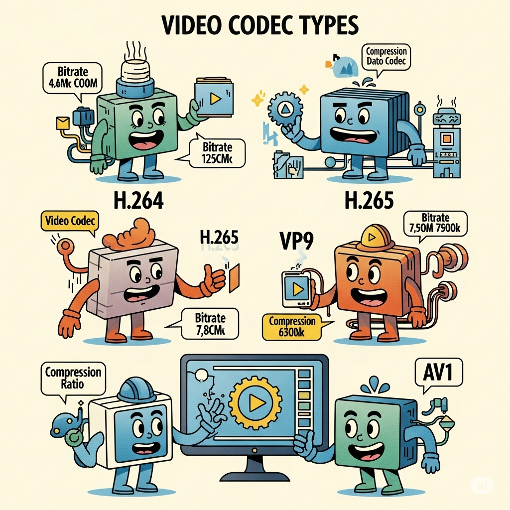

Desmistificando Codecs: Qual o Melhor Formato para a Web?
Publicado em 29 de Junho de 2025 • Leitura de 5 min
Você já finalizou uma edição incrível, exportou o vídeo, e o arquivo final tinha 5GB? Ou talvez você subiu um vídeo para um site e ele demorou uma eternidade para carregar? A resposta para esses problemas quase sempre está em uma palavra técnica e muitas vezes mal compreendida: o codec.
Neste guia, vamos desmistificar o mundo dos codecs e formatos de vídeo. O objetivo não é se aprofundar em detalhes técnicos complexos, mas sim te dar um conhecimento prático para fazer a melhor escolha na hora de exportar seu vídeo para a web, encontrando o equilíbrio perfeito entre qualidade e performance.
Seção 1: A Diferença Crucial - Container vs. Codec
Pense em um arquivo de vídeo como uma caixa de presente.
O container é a caixa em si. Ela pode ter diferentes formatos e cores, mas sua função é guardar tudo lá dentro: o vídeo, o áudio, legendas, etc. Quando você vê um arquivo video.mp4, .MP4 é o tipo da caixa.
O codec é o método como o presente foi dobrado e embalado lá dentro para caber na caixa. Codificador/Decodificador. É o 'idioma' ou a técnica de compressão usada para tornar o arquivo de vídeo pequeno o suficiente para ser armazenado e transmitido pela internet.
Assim, você pode ter uma caixa .MP4 que contém um vídeo 'embalado' com o codec H.264, ou a mesma caixa .MP4 com um vídeo 'embalado' com o codec H.265. A caixa é o container, a forma de embalar é o codec.
Seção 2: Os Codecs de Entrega (Para a Web e Streaming)
H.264 (ou AVC) - O Rei da Compatibilidade
Se você precisa que seu vídeo toque em praticamente qualquer dispositivo no planeta — de celulares antigos a Smart TVs e todos os navegadores — o H.264 é a escolha segura. Ele não é o mais eficiente, mas é o padrão universal.
Quando usar: Para máxima compatibilidade, vídeos para redes sociais e e-mails.
H.265 (ou HEVC) - O Sucessor Eficiente
É a evolução do H.264. Ele consegue entregar a mesma qualidade de imagem com um arquivo cerca de 40-50% menor. É o codec preferido para streaming em 4K, como na Netflix.
Quando usar: Para vídeos de alta qualidade no seu portfólio ou site, onde você sabe que seu público usará dispositivos mais modernos.
AV1 - O Futuro é Aberto e Gratuito
É o codec mais moderno da lista, criado por gigantes como Google, Apple e Amazon. É ainda mais eficiente que o H.265 e, o mais importante, é de código aberto e livre de royalties. O YouTube já o utiliza massivamente.
Quando usar: É a melhor escolha para o futuro. Hoje, é excelente para vídeos no YouTube e para quem quer a máxima compressão com a melhor qualidade
Seção 3: Codecs de Edição (Por que não usá-los na Web?)
E o Apple ProRes, que meu editor pediu? E o Avid DNxHD? É crucial entender que estes são codecs de edição (ou intermediários). O objetivo deles é preservar o máximo de qualidade de imagem durante a pós-produção, com pouquíssima compressão. O resultado são arquivos gigantescos, perfeitos para trabalhar na ilha de edição sem perder dados, mas completamente inviáveis para carregar em um site.
Conclusão: Então, Qual Usar? (O Resumo Prático)
- Para Máxima Compatibilidade (A Escolha Segura): Use H.264 dentro de um container .MP4. É a combinação que nunca falha.
- Para a Melhor Qualidade no seu Portfólio: Se você quer exibir um vídeo em 4K com a melhor aparência possível, H.265 (HEVC) é uma escolha fantástica, resultando em arquivos menores que o H.264.
- A Regra de Ouro do Workflow: Edite em um formato de alta qualidade (como ProRes, se a câmera permitir) e sempre exporte a versão final para a web em H.264 ou H.265.
Entender sobre codecs é deixar de ser apenas um editor e se tornar também um técnico de mídia. É a habilidade que garante que seu trabalho criativo, no qual você investiu tanto tempo, seja visto pelo maior número de pessoas, com a melhor qualidade e a performance que ele merece.